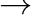

A Publication Tab enables you to place any item on the Wiring canvas in any location. This is useful for distributing the results of a model without having to show all the workings involved in deriving results.
Any item from the wiring tab can be added to a publication tab, and then moved, resized or rotated independently of the item on the wiring tab. To add an item to a Publication Tab, hover the mouse over the item and choose ``Add item to a publication tab'' from the context menu. The sub-menu lists available Publication tabs. Click on the one you wish to place the item on, and the item will be placed in the upper-left hand corner of that tab. It can then be moved to anywhere else on that tab.
For items that dynamically update, the publication tab will be updated dynamically when selections on the Wiring Tab are altered.
Ravel components can also be manipulated on the Publication tab–for example, a different store can be selected on the ``Store'' axis of a Ravel documenting retail sales. If a Ravel has a caliper applied to an axis on the Wiring Tab, to, for example, select a range of dates, that caliper can be moved to a different range of dates on the Publication Tab.
Textual annotation can be added to the publication tab, independently of any annotations on the wiring tab.
Wires currently cannot be added to the publication tab. However, you can insert text-based arrows (eg

) by typing#\rightarrow
on the canvas. This item can then be rotated and scaled to emulate the wiring
diagram connecting parts of the dashboard together.